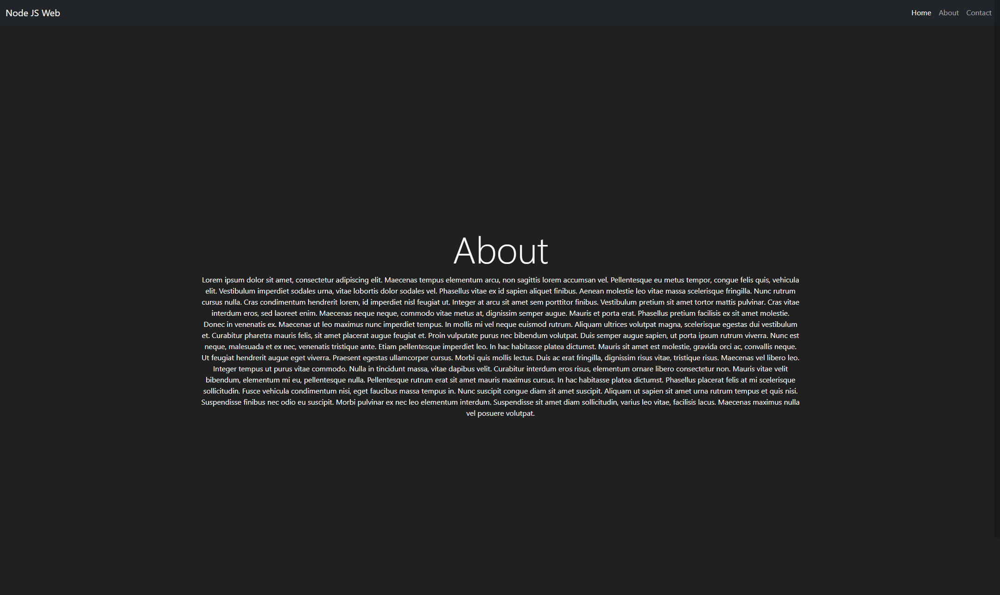

Home
Projects
Contact

NodeJS Web
Responsive created with node js, express, bootstrap 5.
Repository:
GitHub NodeJS Web
NodeJS + React + Mongo
Task manager web Fulls stack app. Repository:
GitHub Full Stack App React